Mẫu nhà dân mới
Bốn dáng nhà sàn mới, mỗi dáng một kiểu mái mà chưa công trình nào trong game dùng. Vẫn giữ Nét Đông Sơn: viền mực, hoa văn trống đồng trên mái, mái theo cấp (tranh, viền đỏ, ngói, viền đồng, chim Lạc), một mái chính như các công trình đã giản lược.
Vì sao cần
Điện cấp 10 cho dựng tới 9 nhà sàn, và cả 9 cùng một dáng. Từ cấp 7, nhà nào cũng thành nhà mái thuyền, đứng cạnh nhau thành một dãy giống hệt. Trộn vài dáng nhà khác nhau thì xóm có nhịp, nhìn ra được từng nhà.


Ảnh chụp bằng chính bộ vẽ của game, cỡ gần như ở độ phóng mặc định trên điện thoại. Cách đặt nhà, đường đất chỉ để minh họa.
Nhà mái lưỡi rìu
Mái hai dốc dựng đứng, nóc dài hơn diềm nên hai đầu hồi chồm ra như lưỡi rìu xéo.
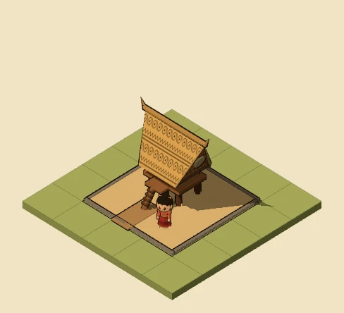
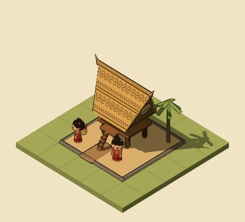
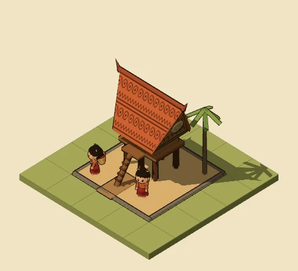
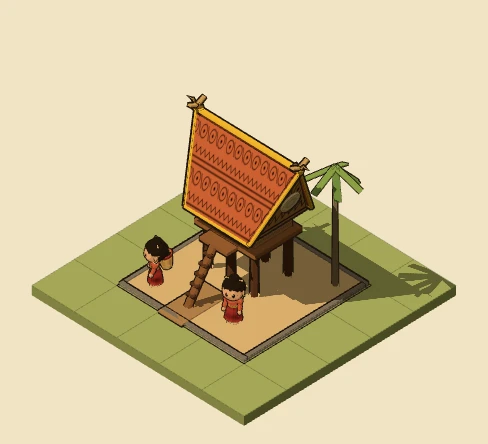
Nét nhận diện
- Dáng cao nhất trong bốn mẫu, mái gần như che kín vách.
- Đầu hồi đan nan có hoa văn, giữa gắn mặt trống đồng nhỏ.
- Thang độc mộc: một khúc gỗ khoét bậc dựng nghiêng lên hiên.
Lấy ý từ
- Rìu xéo đồng Đông Sơn: lưỡi xòe rộng hai mũi.
- Nếp nhà mái dựng cao của cư dân miền núi còn giữ nhà sàn cổ.
Lên cấp
- Tới cấp 5 to dần, cấp 6–8 cột cao dần, mái đổi theo cấp.
- Mũi nóc vút nhọn hai đầu; cấp 10 thay bằng chim Lạc đồng.
Nhà nền đất mái chùm
Nhà không sàn: nền đất đắp kè đá, tường đất nện, mái bốn dốc lợp tranh dày, bốn góc mái cong vểnh.
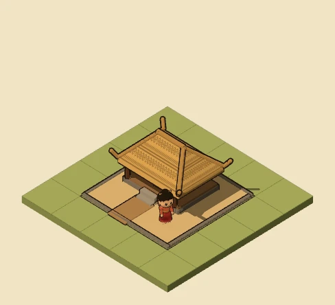
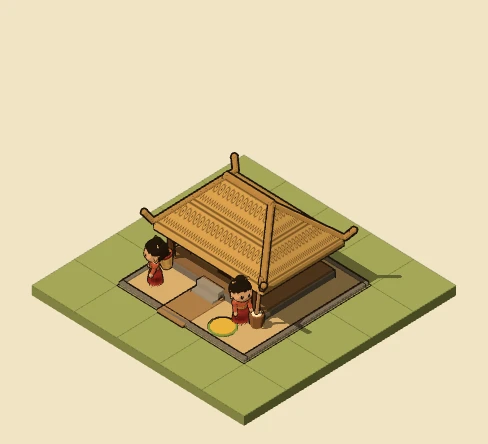
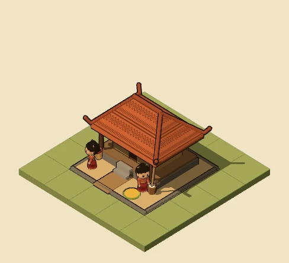
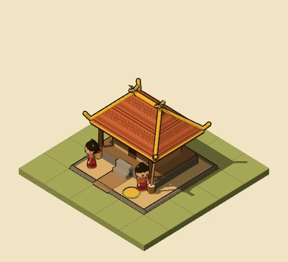
Nét nhận diện
- Dáng thấp và bè nhất, đứng sát đất, không cột sàn.
- Dải hoa văn chạy quanh đầu tường; cửa sổ chấn song.
- Góc mái vểnh: mầm của đầu đao sau này.
Lấy ý từ
- Nhà trệt nền đất của cư dân đồng bằng ven sông.
- Cảnh giã gạo bằng chày trên mặt trống đồng Ngọc Lũ: phần phụ là cối giã và nong thóc.
Lên cấp
- Cấp 6–8 nền đắp cao thêm, tường cao thêm.
- Từ cấp 6 bốn sống góc và diềm mái mang màu viền theo cấp.
Nhà sàn bên ao
Nhà sàn đứng nửa trên ao, mái khum như mui thuyền có nan tre ôm, cầu tre xuống sân.
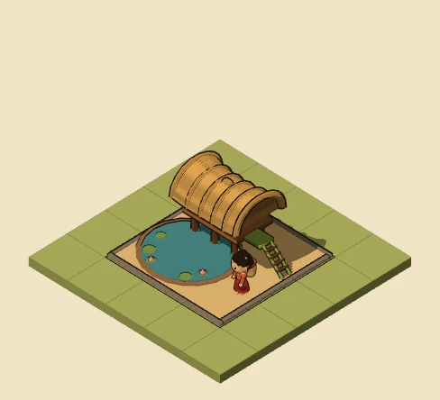
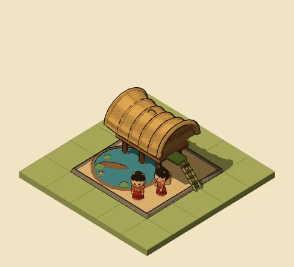
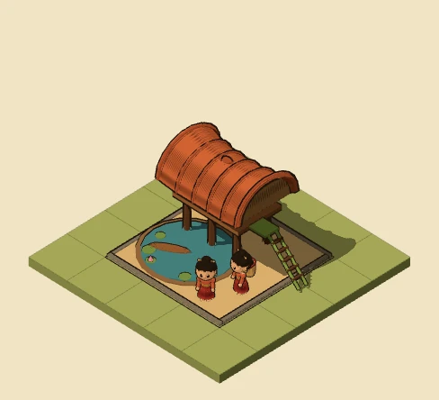
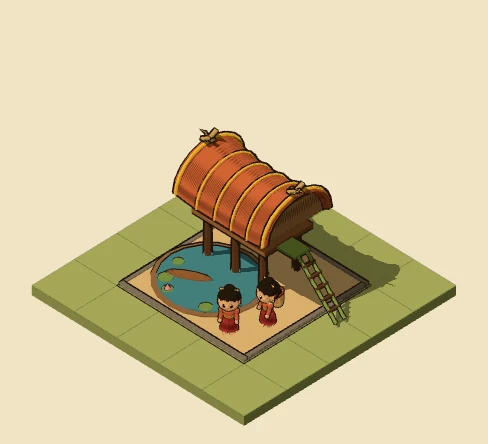
Nét nhận diện
- Mái tròn dài như ống chẻ đôi, hai đầu vểnh nhẹ.
- Ao chiếm nửa móng: lá sen, hoa sen, chiếc thuyền độc mộc buộc bến.
- Hai đầu mui đan nan hoa văn.
Lấy ý từ
- Mui thuyền và đời sống sông nước của người Lạc Việt.
- Nếp nhà vùng chiêm trũng dựng sát ao cá.
Lên cấp
- Nan tre ôm mái mang màu viền theo cấp (đỏ, rồi đồng).
- Ao chỉ để nhìn, không dính tới lũ hay cá.
Nhà sàn dài khau cút
Nhà sàn dài nhiều gian, đầu nóc dựng khau cút đầu chim Lạc, hành lang lan can chạy suốt mặt trước.
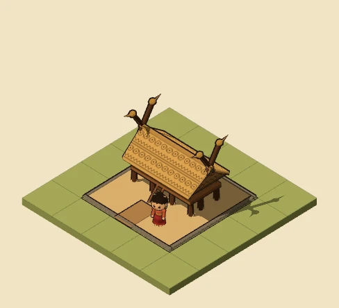
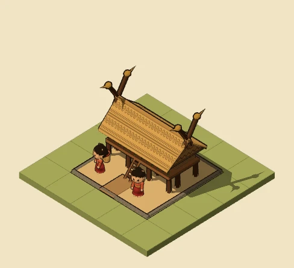
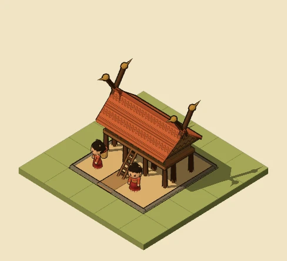
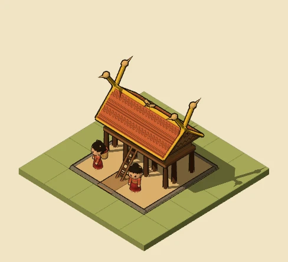
Nét nhận diện
- Dáng dài nhất, nằm ngang suốt móng.
- Hai cặp ván chéo chữ X trên đầu nóc, mỗi đầu ván là đầu chim mỏ dài.
- Hai cửa, một thang giữa lên hành lang.
Lấy ý từ
- Khau cút đầu hồi nhà sàn người Thái, đổi đầu ván thành chim Lạc trên trống đồng.
- Nhà dài ở chung của đại gia đình.
Lên cấp
- Khau cút giữ ở mọi cấp; từ cấp 6 mang màu viền theo cấp.
- Cấp 10 thêm chim Lạc đồng giữa nóc.
Nhà sàn hiện tại, để so
Mái mai rùa tới cấp 6, từ cấp 7 thành nhà mái thuyền. Giữ nguyên làm kiểu thứ năm.


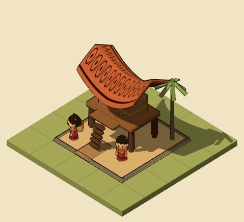
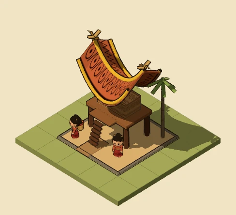
Nặng máy không
Mỗi mẫu vẫn chỉ 6 lưới (3 khối màu, mỗi khối một lớp viền mực) như nhà sàn hiện tại; nhà lưỡi rìu thêm 2 lưới cho mặt trống đồng. Số tam giác ngang hoặc ít hơn nhà sàn hiện tại, không tính người.
| Mẫu | Lưới | Tam giác cấp 5 | Tam giác cấp 10 |
|---|---|---|---|
| Nhà sàn hiện tại | 6 | 2.944 | 4.588 |
| Nhà mái lưỡi rìu | 8 | 1.256 | 2.016 |
| Nhà nền đất mái chùm | 6 | 2.032 | 2.720 |
| Nhà sàn bên ao | 6 | 4.568 | 4.928 |
| Nhà sàn dài khau cút | 6 | 2.352 | 2.912 |
Đưa vào game thế nào
A. Kiểu nhà của nhà sàn
- Chỉ để nhìn, luật không đổi: móng 3×3, giá, số dân, máu, số tối đa như nhà sàn.
- Vòng nút và bảng nhà sàn có nút Đổi kiểu, miễn phí, đổi ngay.
- Nhà mới dựng lần lượt nhận kiểu khác nhà vừa dựng, để xóm tự trộn; người chơi đổi lại tùy ý.
- Bản lưu thêm một trường tùy chọn như hướng xoay (
Building.rot), không lên phiên bản lưu. - Mẫu kinh đô, kinh đô máy Đấu thành, máy chủ không đổi.
B. Mỗi mẫu một công trình riêng
- Mỗi nhà một công dụng (ví dụ nhà bên ao nuôi cá, nhà dài khau cút thêm chỗ quân).
- Phải cân lại kinh tế, thêm số tối đa, mẫu kinh đô, Lạc hầu, bản lưu mới.
- Làm sau được, khi đã có kiểu nhà ở phương án A.
Trống đồng chỉ khắc hai kiểu nhà (mái thuyền, mái tròn), game đã dùng cả hai cho nhà sàn và Điện. Bốn mẫu mới lấy ý từ đồ đồng Đông Sơn và nếp nhà các dân tộc còn giữ nhà sàn cổ, nên là phần sáng tạo của game, không phải phục dựng khảo cổ.
Cần chủ dự án chốt
- Giữ, bỏ hay sửa mẫu nào trong bốn mẫu? (ví dụ khau cút to hơn, ao nhỏ lại)
- Làm theo phương án A (kiểu nhà, chỉ để nhìn) hay B (công trình riêng)?
- Nhà mới dựng tự trộn kiểu, hay luôn ra nhà sàn hiện tại rồi người chơi tự đổi?